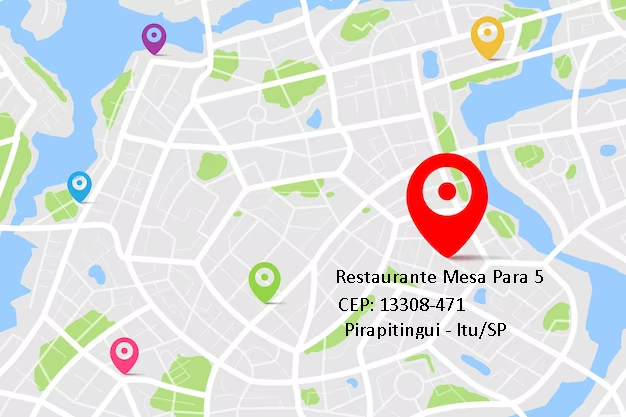

Trabalhe Conosco
Envie seu curriculo através do nosso email:
mesapara5@gmail.comMapa de localização
Avaliações
Ana - ★ ★ ★ ★ ★
Comida deliciosa em um ambiente aconchegante! O Sabor Eclético realmente vive até o seu nome. Eles oferecem uma
variedade incrível de pratos de diferentes cozinhas do mundo. Experimentei o frango ao curry indiano e estava
divino! O atendimento foi cordial, e a decoração do restaurante é charmosa. O único ponto negativo foi o preço
um pouco mais alto, mas a qualidade da comida compensa.
Carlos - ★ ★ ★ ★ ★
O Sabor Eclético tem uma boa ideia, mas a execução deixa a desejar. Pedimos uma pizza italiana e um sushi
japonês, e ambos estavam apenas medianos. Acho que eles estão tentando fazer muitas coisas diferentes e não se
dedicam totalmente a nenhuma delas. Além disso, o serviço foi um pouco lento, e o restaurante estava um pouco
barulhento. Pode ser uma boa opção para grupos com gostos diversos, mas eu prefiro um restaurante especializado.
Maria - ★ ★ ★ ★ ★
Que descoberta maravilhosa! O Sabor Eclético é o meu novo restaurante favorito. Eles realmente acertaram em
cheio ao oferecer uma variedade tão ampla de pratos de alta qualidade. O bife argentino que pedi estava
perfeitamente grelhado, e o tiramisu de sobremesa era divino. A equipe foi atenciosa e prestativa, e o ambiente
é muito agradável para um jantar romântico ou uma noite com amigos. Definitivamente voltarei!